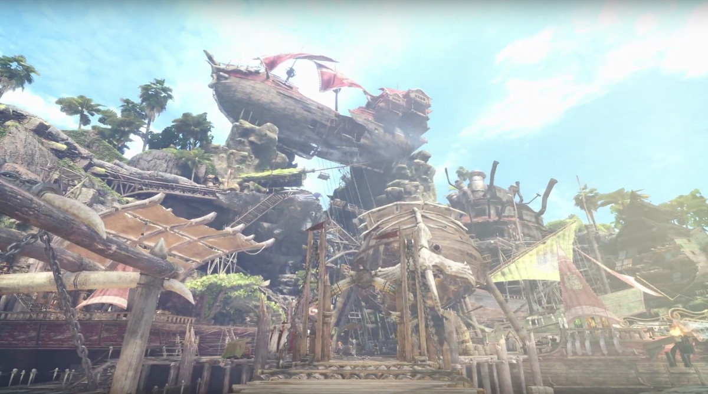
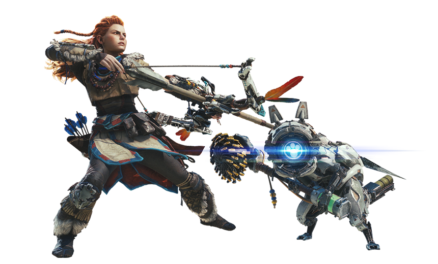
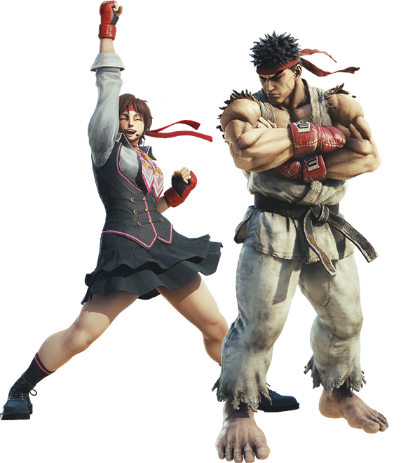

Bienvenue sur mon site amis chasseurs, vous découvrirez içi des infos sur le jeu Monster Hunter:World sorti le 26 janvier 2018, sur Playstation 4 et Xbox One et plus tard dans l'année sur PC. A l'heure actuelle le jeu s'est vendu à 6 millions d'exemplaires!
Présentation du jeu
Monster Hunter est une série de jeu développé par Capcom, très populaire au Japon, la licence a vu le jour en 2004 sur Playstation 2, elle s'est portée par la suite sur toutes les consoles tels que la PSP, la Playstation 3 ou récemment encore la nintendo DS.

Dans Monster Hunter:World, le chasseur que vous incarnez fait parti de la cinquiéme flotte qui rejoint la Comission de recherche à Astera qui se trouve dans le nouveau monde. Durant votre traversée, vous êtes attaqués par le Zorah Magdaros, un dragon ancien gigantesque.
Votre but sera de découvrir la raison pour laquelle les dragons anciens quittent le continent pour rejoindre le nouveau monde une fois tous les 10 ans.
Dans cette quête vous serrez assisté par votre palico un chat combattant qui se battera à vos côtés, vous aurez la possiblité de le personnaliser en même temps que votre personnage.
Néanmoins même s'il est possible d'accomplir toutes les missions seul, vous avez la possibilité de jouer avec trois autres chasseurs maximum, en effet si vous n'arrivez pas à accomplir une quête vous pourrez alors lancer une fusée de détresse, le niveau de difficulté sera augmenté, si vous avez aimé jouer avec certains joueurs vous pouvez les ajouter à votre liste d'amis et si vous le souhaitez également créer un clan avec ces joeurs, afin d'accomplir vos quêtes ensemble.
Hormis les quêtes liées à l'histoire du jeu, vous pourrez également faire des quêtes évenements qui changent réguliérement, faire des quêtes libres ou encore des contrats, ces derniers sont soumis à des conditions spécifiques, les accomplir vous permettront d'avoir accés à des récompenses plus intéressantes.
Ayant conscience du succés de son jeu, Capcom mettra en place des mises à jour gratuites réguilère, comme prochainement avec l'ajout d'un nouveau monstre, ou en encore en multipliant les colaborations avec ces autres licences comme Horizon: Zero Down et Street Fighter 5.
